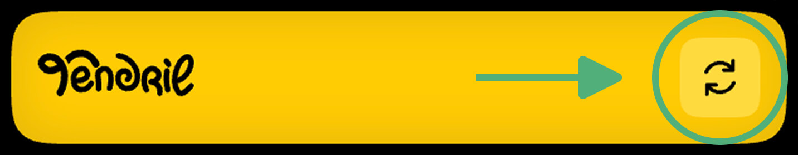
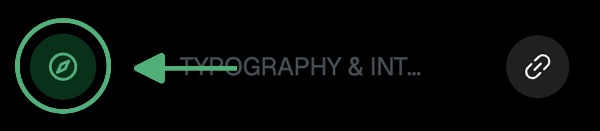
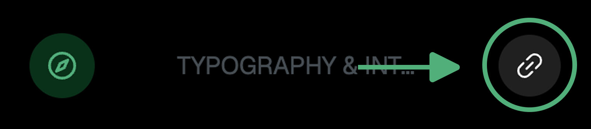
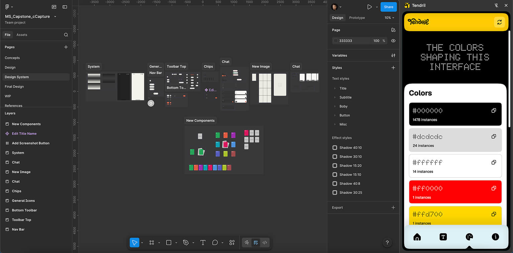

About
Tendril is a Chrome browser extension that turns any website into a quick design reference. Open any page, click the extension icon, and get fonts, typography specs, and colors right in your browser side panel. It can also help reveal semantic and SEO-related gaps by showing only the elements that actually exist in the live DOM. All the useful information in one extension.
Top navbar
Refresh button - the circular arrow in the top right corner. It rescans the currently active tab.

This matters when the extension is already open in the side panel and you want to switch between pages without closing it. For example, you can open a reference website, move to Figma, then come back to the site, hit Refresh, and get the data from that exact page.
Home screen
This is the starting screen. It shows a short font summary and a mini color palette from the scanned page. The font summary includes the categories Heading 1-3 and Bodycopy, rendered in their actual fonts and weights.

-
Return to source tab button - takes you back to the tab that was active when the scan happened. Useful when you switched to Figma or another tab and want to quickly jump back to the original page. Just click the compass.

-
Open link in a new tab button - opens the scanned website in a new window. Use it when you want to quickly move to a specific internal page of the same website or keep the source open next to Figma without closing your current tab.
Next to these buttons, Tendril shows the scanned website title pulled from the title tag.
Fonts screen
A detailed typography breakdown. The extension scans following tags: h1-h6, p, li, a, span, label. For each tag, it shows:
-
Number of elements of that tag found on the page
-
Font Family
-
Font Size
-
Line Height
-
Font Weight
-
Letter Spacing
This makes it easy to pull typography tokens straight into Figma.
Colors screen
A full color palette of the page. Tendril extracts text, background, and border colors from all elements, converts them to HEX, and removes duplicates. Colors are sorted from most frequently used to least used. Each color card includes:
-
HEX value
-
Usage count
-
Copy to clipboard button
Click the copy icon and the HEX value goes straight to your clipboard.
Typical workflow
-
Open a reference website
-
Click the Tendril icon - the side panel opens and automatically scans the page
-
Move to Figma - the panel stays open
-
Copy whatever you need: HEX colors, fonts, sizes
-
If you need another page from the same site, click the link button, go there, return to the extension, and hit Refresh
-
If you lose the original tab, click the compass to jump back to it
